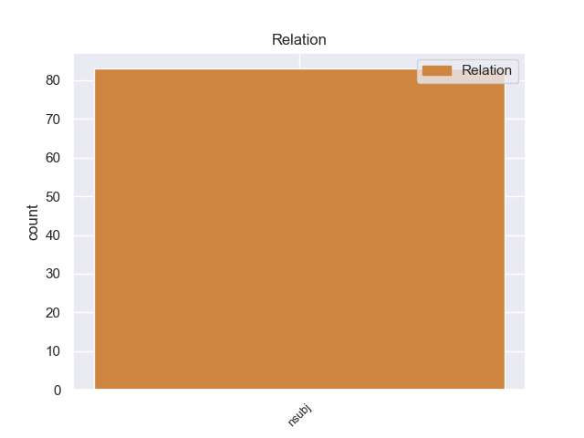
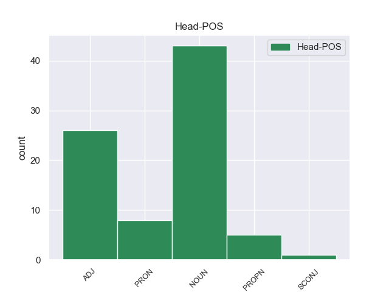
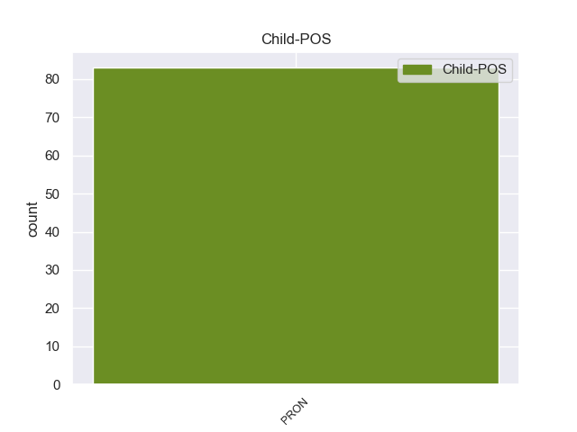

Distribution of features within this leaf



Morphosyntax Rules sorted by frequency.
- When the dependent token is the nominal subject(nsubj) of the head token, and the head token is NOUN the Case needs to be Acc.
1 Ella él PRON _ Case=Acc,Nom|Gender=Fem|Number=Sing|Person=3|PronType=Prs 5 nsubj _ _
2 es _ _ _ _ 0 _ _ _
3 una _ _ _ _ 0 _ _ _
4 pequeña _ _ _ _ 0 _ _ _
5 niña niña NOUN _ Gender=Fem|Number=Sing 0 _ _ _
6 super _ _ _ _ 0 _ _ _
7 - _ _ _ _ 0 _ _ _
8 inteligente _ _ _ _ 0 _ _ _
9 pero _ _ _ _ 0 _ _ _
10 destructiva _ _ _ _ 0 _ _ _
11 . _ _ _ _ 0 _ _ _
1 La _ _ _ _ 0 _ _ _
2 dirigente _ _ _ _ 0 _ _ _
3 socialdemócrata _ _ _ _ 0 _ _ _
4 dijo _ _ _ _ 0 _ _ _
5 que _ _ _ _ 0 _ _ _
6 su _ _ _ _ 0 _ _ _
7 partido _ _ _ _ 0 _ _ _
8 está _ _ _ _ 0 _ _ _
9 promoviendo _ _ _ _ 0 _ _ _
10 una _ _ _ _ 0 _ _ _
11 Ley _ _ _ _ 0 _ _ _
12 que _ _ _ _ 0 _ _ _
13 obligue _ _ _ _ 0 _ _ _
14 a _ _ _ _ 0 _ _ _
15 todas _ _ _ _ 0 _ _ _
16 las _ _ _ _ 0 _ _ _
17 instituciones _ _ _ _ 0 _ _ _
18 de _ _ _ _ 0 _ _ _
19 el _ _ _ _ 0 _ _ _
20 Estado _ _ _ _ 0 _ _ _
21 a _ _ _ _ 0 _ _ _
22 efectuar _ _ _ _ 0 _ _ _
23 sus _ _ _ _ 0 _ _ _
24 compras _ _ _ _ 0 _ _ _
25 de _ _ _ _ 0 _ _ _
26 manera _ _ _ _ 0 _ _ _
27 pública _ _ _ _ 0 _ _ _
28 por _ _ _ _ 0 _ _ _
29 internet _ _ _ _ 0 _ _ _
30 , _ _ _ _ 0 _ _ _
31 ya _ _ _ _ 0 _ _ _
32 que _ _ _ _ 0 _ _ _
33 en _ _ _ _ 0 _ _ _
34 la _ _ _ _ 0 _ _ _
35 actualidad _ _ _ _ 0 _ _ _
36 ello él PRON _ Case=Acc,Nom|Gender=Masc|Number=Sing|Person=3|PronType=Prs 38 nsubj _ _
37 es _ _ _ _ 0 _ _ _
38 posible posible ADJ _ Number=Sing 0 _ _ _
39 técnicamente _ _ _ _ 0 _ _ _
40 , _ _ _ _ 0 _ _ _
41 para _ _ _ _ 0 _ _ _
42 que _ _ _ _ 0 _ _ _
43 los _ _ _ _ 0 _ _ _
44 procesos _ _ _ _ 0 _ _ _
45 de _ _ _ _ 0 _ _ _
46 adquisición _ _ _ _ 0 _ _ _
47 se _ _ _ _ 0 _ _ _
48 realicen _ _ _ _ 0 _ _ _
49 a _ _ _ _ 0 _ _ _
50 la _ _ _ _ 0 _ _ _
51 vista _ _ _ _ 0 _ _ _
52 de _ _ _ _ 0 _ _ _
53 el _ _ _ _ 0 _ _ _
54 ciudadano _ _ _ _ 0 _ _ _
55 , _ _ _ _ 0 _ _ _
56 garantizando _ _ _ _ 0 _ _ _
57 así _ _ _ _ 0 _ _ _
58 su _ _ _ _ 0 _ _ _
59 transparencia _ _ _ _ 0 _ _ _
60 , _ _ _ _ 0 _ _ _
61 lo _ _ _ _ 0 _ _ _
62 que _ _ _ _ 0 _ _ _
63 permitirá _ _ _ _ 0 _ _ _
64 una _ _ _ _ 0 _ _ _
65 efectiva _ _ _ _ 0 _ _ _
66 contraloría _ _ _ _ 0 _ _ _
67 social _ _ _ _ 0 _ _ _
68 que _ _ _ _ 0 _ _ _
69 avale _ _ _ _ 0 _ _ _
70 la _ _ _ _ 0 _ _ _
71 honestidad _ _ _ _ 0 _ _ _
72 de _ _ _ _ 0 _ _ _
73 los _ _ _ _ 0 _ _ _
74 procesos _ _ _ _ 0 _ _ _
75 de _ _ _ _ 0 _ _ _
76 compras _ _ _ _ 0 _ _ _
77 a _ _ _ _ 0 _ _ _
78 el _ _ _ _ 0 _ _ _
79 evitar _ _ _ _ 0 _ _ _
80 la _ _ _ _ 0 _ _ _
81 intermediación _ _ _ _ 0 _ _ _
82 , _ _ _ _ 0 _ _ _
83 es _ _ _ _ 0 _ _ _
84 decir _ _ _ _ 0 _ _ _
85 , _ _ _ _ 0 _ _ _
86 el _ _ _ _ 0 _ _ _
87 encuentro _ _ _ _ 0 _ _ _
88 cara _ _ _ _ 0 _ _ _
89 a _ _ _ _ 0 _ _ _
90 cara _ _ _ _ 0 _ _ _
91 entre _ _ _ _ 0 _ _ _
92 el _ _ _ _ 0 _ _ _
93 vendedor _ _ _ _ 0 _ _ _
94 y _ _ _ _ 0 _ _ _
95 el _ _ _ _ 0 _ _ _
96 comprador _ _ _ _ 0 _ _ _
97 , _ _ _ _ 0 _ _ _
98 que _ _ _ _ 0 _ _ _
99 es _ _ _ _ 0 _ _ _
100 un _ _ _ _ 0 _ _ _
101 mecanismo _ _ _ _ 0 _ _ _
102 que _ _ _ _ 0 _ _ _
103 facilita _ _ _ _ 0 _ _ _
104 la _ _ _ _ 0 _ _ _
105 corrupción _ _ _ _ 0 _ _ _
106 a _ _ _ _ 0 _ _ _
107 el _ _ _ _ 0 _ _ _
108 poner _ _ _ _ 0 _ _ _
109 en _ _ _ _ 0 _ _ _
110 manos _ _ _ _ 0 _ _ _
111 de _ _ _ _ 0 _ _ _
112 algunos _ _ _ _ 0 _ _ _
113 funcionarios _ _ _ _ 0 _ _ _
114 inescrupulosos _ _ _ _ 0 _ _ _
115 el _ _ _ _ 0 _ _ _
116 poder _ _ _ _ 0 _ _ _
117 discrecional _ _ _ _ 0 _ _ _
118 de _ _ _ _ 0 _ _ _
119 adquirir _ _ _ _ 0 _ _ _
120 lo _ _ _ _ 0 _ _ _
121 bienes _ _ _ _ 0 _ _ _
122 y _ _ _ _ 0 _ _ _
123 servicios _ _ _ _ 0 _ _ _
124 que _ _ _ _ 0 _ _ _
125 los _ _ _ _ 0 _ _ _
126 organismos _ _ _ _ 0 _ _ _
127 públicos _ _ _ _ 0 _ _ _
128 requieren _ _ _ _ 0 _ _ _
129 . _ _ _ _ 0 _ _ _
1 A _ _ _ _ 0 _ _ _
2 mi _ _ _ _ 0 _ _ _
3 me _ _ _ _ 0 _ _ _
4 liaron _ _ _ _ 0 _ _ _
5 para _ _ _ _ 0 _ _ _
6 ir _ _ _ _ 0 _ _ _
7 a _ _ _ _ 0 _ _ _
8 una _ _ _ _ 0 _ _ _
9 entrevista _ _ _ _ 0 _ _ _
10 con _ _ _ _ 0 _ _ _
11 uno _ _ _ _ 0 _ _ _
12 de _ _ _ _ 0 _ _ _
13 sus _ _ _ _ 0 _ _ _
14 clientes _ _ _ _ 0 _ _ _
15 cuando _ _ _ _ 0 _ _ _
16 les _ _ _ _ 0 _ _ _
17 dije _ _ _ _ 0 _ _ _
18 que _ _ _ _ 0 _ _ _
19 me _ _ _ _ 0 _ _ _
20 resultaba _ _ _ _ 0 _ _ _
21 imposible _ _ _ _ 0 _ _ _
22 por _ _ _ _ 0 _ _ _
23 otros _ _ _ _ 0 _ _ _
24 compromisos _ _ _ _ 0 _ _ _
25 que _ _ _ _ 0 _ _ _
26 tenía _ _ _ _ 0 _ _ _
27 , _ _ _ _ 0 _ _ _
28 insistieron _ _ _ _ 0 _ _ _
29 tanto _ _ _ _ 0 _ _ _
30 que _ _ _ _ 0 _ _ _
31 cedí _ _ _ _ 0 _ _ _
32 para _ _ _ _ 0 _ _ _
33 después _ _ _ _ 0 _ _ _
34 ser _ _ _ _ 0 _ _ _
35 ellos él PRON _ Case=Acc,Nom|Gender=Masc|Number=Plur|Person=3|PronType=Prs 36 nsubj _ _
36 los él PRON _ Case=Acc|Gender=Masc|Number=Plur|Person=3|PrepCase=Npr|PronType=Prs 0 _ _ _
37 que _ _ _ _ 0 _ _ _
38 me _ _ _ _ 0 _ _ _
39 dejaron _ _ _ _ 0 _ _ _
40 tirado _ _ _ _ 0 _ _ _
41 porque _ _ _ _ 0 _ _ _
42 ya _ _ _ _ 0 _ _ _
43 habían _ _ _ _ 0 _ _ _
44 cubierto _ _ _ _ 0 _ _ _
45 el _ _ _ _ 0 _ _ _
46 puesto _ _ _ _ 0 _ _ _
47 sin _ _ _ _ 0 _ _ _
48 avisar _ _ _ _ 0 _ _ _
49 me _ _ _ _ 0 _ _ _
50 . _ _ _ _ 0 _ _ _
1 Con _ _ _ _ 0 _ _ _
2 su _ _ _ _ 0 _ _ _
3 ex _ _ _ _ 0 _ _ _
4 colaboró _ _ _ _ 0 _ _ _
5 en _ _ _ _ 0 _ _ _
6 el _ _ _ _ 0 _ _ _
7 cover _ _ _ _ 0 _ _ _
8 de _ _ _ _ 0 _ _ _
9 Me _ _ _ _ 0 _ _ _
10 and _ _ _ _ 0 _ _ _
11 Mrs. _ _ _ _ 0 _ _ _
12 Jones _ _ _ _ 0 _ _ _
13 en _ _ _ _ 0 _ _ _
14 su _ _ _ _ 0 _ _ _
15 álbum _ _ _ _ 0 _ _ _
16 Call _ _ _ _ 0 _ _ _
17 me yo PRON _ Case=Acc,Dat|Number=Sing|Person=1|PrepCase=Npr|PronType=Prs 18 nsubj _ _
18 irresponsible irresponsible PROPN _ Number=Sing 0 _ _ _
19 . _ _ _ _ 0 _ _ _
1 El _ _ _ _ 0 _ _ _
2 agua _ _ _ _ 0 _ _ _
3 de _ _ _ _ 0 _ _ _
4 Fushimi _ _ _ _ 0 _ _ _
5 tiene _ _ _ _ 0 _ _ _
6 características _ _ _ _ 0 _ _ _
7 especiales _ _ _ _ 0 _ _ _
8 , _ _ _ _ 0 _ _ _
9 lo _ _ _ _ 0 _ _ _
10 que _ _ _ _ 0 _ _ _
11 la _ _ _ _ 0 _ _ _
12 convierte _ _ _ _ 0 _ _ _
13 en _ _ _ _ 0 _ _ _
14 un _ _ _ _ 0 _ _ _
15 componente _ _ _ _ 0 _ _ _
16 esencial _ _ _ _ 0 _ _ _
17 de _ _ _ _ 0 _ _ _
18 un _ _ _ _ 0 _ _ _
19 tipo _ _ _ _ 0 _ _ _
20 particular _ _ _ _ 0 _ _ _
21 de _ _ _ _ 0 _ _ _
22 sake _ _ _ _ 0 _ _ _
23 que _ _ _ _ 0 _ _ _
24 se _ _ _ _ 0 _ _ _
25 prepara _ _ _ _ 0 _ _ _
26 en _ _ _ _ 0 _ _ _
27 el _ _ _ _ 0 _ _ _
28 pueblo _ _ _ _ 0 _ _ _
29 y _ _ _ _ 0 _ _ _
30 lo él PRON _ Case=Acc|Gender=Masc|Number=Sing|Person=3|PrepCase=Npr|PronType=Prs 31 nsubj _ _
31 que que SCONJ _ _ 0 _ _ _
32 explica _ _ _ _ 0 _ _ _
33 por _ _ _ _ 0 _ _ _
34 qué _ _ _ _ 0 _ _ _
35 el _ _ _ _ 0 _ _ _
36 área _ _ _ _ 0 _ _ _
37 se _ _ _ _ 0 _ _ _
38 convirtió _ _ _ _ 0 _ _ _
39 en _ _ _ _ 0 _ _ _
40 un _ _ _ _ 0 _ _ _
41 centro _ _ _ _ 0 _ _ _
42 importante _ _ _ _ 0 _ _ _
43 en _ _ _ _ 0 _ _ _
44 el _ _ _ _ 0 _ _ _
45 desarrollo _ _ _ _ 0 _ _ _
46 de _ _ _ _ 0 _ _ _
47 sake _ _ _ _ 0 _ _ _
48 en _ _ _ _ 0 _ _ _
49 Kioto _ _ _ _ 0 _ _ _
50 . _ _ _ _ 0 _ _ _
non-conforming Examples:
1 Existe _ _ _ _ 0 _ _ _
2 un _ _ _ _ 0 _ _ _
3 sujeto _ _ _ _ 0 _ _ _
4 individual _ _ _ _ 0 _ _ _
5 e _ _ _ _ 0 _ _ _
6 indefinible _ _ _ _ 0 _ _ _
7 que que PRON _ PronType=Int,Rel 0 _ _ _
8 soy _ _ _ _ 0 _ _ _
9 yo yo PRON _ Case=Nom|Number=Sing|Person=1|PronType=Prs 7 nsubj _ SpaceAfter=No
10 , _ _ _ _ 0 _ _ _
11 y _ _ _ _ 0 _ _ _
12 nadie _ _ _ _ 0 _ _ _
13 puede _ _ _ _ 0 _ _ _
14 representar _ _ _ _ 0 _ _ _
15 me _ _ _ _ 0 _ _ _
16 . _ _ _ _ 0 _ _ _
1 Yo yo PRON _ Case=Nom|Number=Sing|Person=1|PronType=Prs 5 nsubj _ _
2 sólo _ _ _ _ 0 _ _ _
3 soy _ _ _ _ 0 _ _ _
4 la _ _ _ _ 0 _ _ _
5 cabeza cabeza NOUN _ Gender=Fem|Number=Sing 0 _ _ _
6 visible _ _ _ _ 0 _ _ _
7 de _ _ _ _ 0 _ _ _
8 el _ _ _ _ 0 _ _ _
9 proyecto _ _ _ _ 0 _ _ _
10 , _ _ _ _ 0 _ _ _
11 trabaja _ _ _ _ 0 _ _ _
12 mucha _ _ _ _ 0 _ _ _
13 gente _ _ _ _ 0 _ _ _
14 , _ _ _ _ 0 _ _ _
15 pero _ _ _ _ 0 _ _ _
16 sí _ _ _ _ 0 _ _ _
17 es _ _ _ _ 0 _ _ _
18 cierto _ _ _ _ 0 _ _ _
19 que _ _ _ _ 0 _ _ _
20 aquí _ _ _ _ 0 _ _ _
21 estamos _ _ _ _ 0 _ _ _
22 tras _ _ _ _ 0 _ _ _
23 siete _ _ _ _ 0 _ _ _
24 años _ _ _ _ 0 _ _ _
25 . _ _ _ _ 0 _ _ _
1 Yo yo PRON _ Case=Nom|Number=Sing|Person=1|PronType=Prs 4 nsubj _ _
2 soy _ _ _ _ 0 _ _ _
3 una _ _ _ _ 0 _ _ _
4 persona persona NOUN _ Gender=Fem|Number=Sing 0 _ _ _
5 normal _ _ _ _ 0 _ _ _
6 y _ _ _ _ 0 _ _ _
7 corriente _ _ _ _ 0 _ _ _
8 , _ _ _ _ 0 _ _ _
9 sólo _ _ _ _ 0 _ _ _
10 que _ _ _ _ 0 _ _ _
11 he _ _ _ _ 0 _ _ _
12 hecho _ _ _ _ 0 _ _ _
13 unas _ _ _ _ 0 _ _ _
14 cuantas _ _ _ _ 0 _ _ _
15 cosas _ _ _ _ 0 _ _ _
16 un _ _ _ _ 0 _ _ _
17 poco _ _ _ _ 0 _ _ _
18 raras _ _ _ _ 0 _ _ _
19 en _ _ _ _ 0 _ _ _
20 la _ _ _ _ 0 _ _ _
21 vida _ _ _ _ 0 _ _ _
22 . _ _ _ _ 0 _ _ _
1 Yo yo PRON _ Case=Nom|Number=Sing|Person=1|PronType=Prs 5 nsubj _ _
2 también _ _ _ _ 0 _ _ _
3 he _ _ _ _ 0 _ _ _
4 sido _ _ _ _ 0 _ _ _
5 víctima víctima NOUN _ Gender=Fem|Number=Sing 0 _ _ _
6 de _ _ _ _ 0 _ _ _
7 esta _ _ _ _ 0 _ _ _
8 tienda _ _ _ _ 0 _ _ _
9 . _ _ _ _ 0 _ _ _
1 En _ _ _ _ 0 _ _ _
2 ese _ _ _ _ 0 _ _ _
3 trabajo _ _ _ _ 0 _ _ _
4 podemos _ _ _ _ 0 _ _ _
5 encontrar _ _ _ _ 0 _ _ _
6 temas _ _ _ _ 0 _ _ _
7 intimistas _ _ _ _ 0 _ _ _
8 como _ _ _ _ 0 _ _ _
9 " _ _ _ _ 0 _ _ _
10 Que _ _ _ _ 0 _ _ _
11 la _ _ _ _ 0 _ _ _
12 noche _ _ _ _ 0 _ _ _
13 es _ _ _ _ 0 _ _ _
14 de _ _ _ _ 0 _ _ _
15 huir _ _ _ _ 0 _ _ _
16 " _ _ _ _ 0 _ _ _
17 , _ _ _ _ 0 _ _ _
18 " _ _ _ _ 0 _ _ _
19 No _ _ _ _ 0 _ _ _
20 sabes _ _ _ _ 0 _ _ _
21 cuánto _ _ _ _ 0 _ _ _
22 te _ _ _ _ 0 _ _ _
23 he _ _ _ _ 0 _ _ _
24 querido _ _ _ _ 0 _ _ _
25 " _ _ _ _ 0 _ _ _
26 ( _ _ _ _ 0 _ _ _
27 la _ _ _ _ 0 _ _ _
28 más _ _ _ _ 0 _ _ _
29 coreada _ _ _ _ 0 _ _ _
30 en _ _ _ _ 0 _ _ _
31 sus _ _ _ _ 0 _ _ _
32 conciertos _ _ _ _ 0 _ _ _
33 ) _ _ _ _ 0 _ _ _
34 , _ _ _ _ 0 _ _ _
35 " _ _ _ _ 0 _ _ _
36 Planetas _ _ _ _ 0 _ _ _
37 " _ _ _ _ 0 _ _ _
38 , _ _ _ _ 0 _ _ _
39 y _ _ _ _ 0 _ _ _
40 también _ _ _ _ 0 _ _ _
41 piezas _ _ _ _ 0 _ _ _
42 de _ _ _ _ 0 _ _ _
43 corte _ _ _ _ 0 _ _ _
44 más _ _ _ _ 0 _ _ _
45 impulsivo _ _ _ _ 0 _ _ _
46 , _ _ _ _ 0 _ _ _
47 véa _ _ _ _ 0 _ _ _
48 se _ _ _ _ 0 _ _ _
49 " _ _ _ _ 0 _ _ _
50 Gandul _ _ _ _ 0 _ _ _
51 " _ _ _ _ 0 _ _ _
52 , _ _ _ _ 0 _ _ _
53 la _ _ _ _ 0 _ _ _
54 contundente _ _ _ _ 0 _ _ _
55 " _ _ _ _ 0 _ _ _
56 Ya _ _ _ _ 0 _ _ _
57 ves ver PROPN _ Number=Sing 0 _ _ _
58 tú tú PRON _ Case=Nom|Number=Sing|Person=2|PronType=Prs 57 nsubj _ SpaceAfter=No
59 " _ _ _ _ 0 _ _ _
60 o _ _ _ _ 0 _ _ _
61 la _ _ _ _ 0 _ _ _
62 terrenal _ _ _ _ 0 _ _ _
63 " _ _ _ _ 0 _ _ _
64 Más _ _ _ _ 0 _ _ _
65 acá _ _ _ _ 0 _ _ _
66 " _ _ _ _ 0 _ _ _
67 en _ _ _ _ 0 _ _ _
68 las _ _ _ _ 0 _ _ _
69 que _ _ _ _ 0 _ _ _
70 le _ _ _ _ 0 _ _ _
71 acompaña _ _ _ _ 0 _ _ _
72 la _ _ _ _ 0 _ _ _
73 voz _ _ _ _ 0 _ _ _
74 de _ _ _ _ 0 _ _ _
75 Mofli _ _ _ _ 0 _ _ _
76 . _ _ _ _ 0 _ _ _